About
I am passionate about building robust and scalable backend systems, and I am now expanding my horizons into Artificial Intelligence.

Back End Developer | Python & NestJS | AI Enthusiast
Passionate about building robust and scalable backend systems. Currently studying Computer Science at Aix-Marseille University, and a graduate of Université du Lac Tanganyika in Software Engineering. Recently contributed as a Back End Developer at Asyst Resources LTD, working with NestJS, Python, and modern backend architectures. Now expanding into Artificial Intelligence to build smarter, more impactful systems.
- Website: My Website
- City: Arles, France
- Languages:
- Degree: Bachelor
- Email: nganjialdoalex@gmail.com
- Available for: Freelance / Internship / Apprenticeship
I started programming in 2020 with no idea what computer science truly was — I honestly thought it was just Word, Excel, and PowerPoint. Coming from a scientific high school background where I once dreamed of medical school, life had other plans. The moment I discovered real programming, I fell in love. After graduating from Université du Lac Tanganyika in 2024, I landed an internship at Asyst Resources LTD in early 2025, where I discovered modern backend depth: microservices, SaaS architectures, and scalable systems. They hired me as their backend developer after the internship. In September 2025, I moved to France to continue my education at Aix-Marseille University. My goal is simple: build things that genuinely help the people around me — because I believe that is the very purpose that gives life its meaning.
Impact
Key milestones from my coding journey and engineering work.
Skills
Core technologies I work with daily, from backend systems to the tools that power them.
Programming Languages
Backend & Frameworks
Tools & Learning
Resume
From discovering programming in 2020 to contributing as a Back End Developer at Asyst, and now expanding into Artificial Intelligence at Aix-Marseille University — my journey is defined by curiosity, discipline, and a drive to build things that matter.
Summary
Aldo Alex NGANJI
Back End Developer skilled in Python and NestJS, expanding into Artificial Intelligence. Graduate of Université du Lac Tanganyika in Software Engineering, currently studying Computer Science at Aix-Marseille University. Former Back End Developer at Asyst Resources LTD.
- Arles, France
- +33 7 58 80 69 42
- nganjialdoalex@gmail.com
Education
Computer Science — BUT2 Informatique
Sept 2026 – Present
Aix-Marseille Université — IUT d'Arles, France
Currently in the second year (BUT2) of the B.U.T. in Computer Science, building on a fully validated first year — deepening algorithms, systems architecture, databases, and Artificial Intelligence.
Computer Science — BUT1 Informatique
Sept 2025 – 2026
Aix-Marseille Université — IUT d'Arles, France
Completed the first year (BUT1) — Admis with all 60 ECTS and 6/6 competencies validated. Foundations in development, algorithms, databases, systems, and client needs analysis.
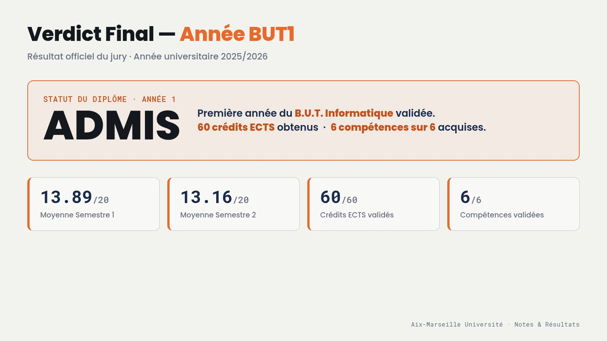
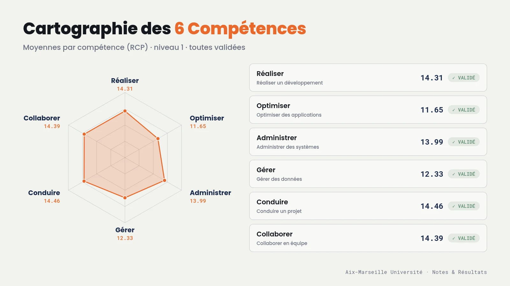
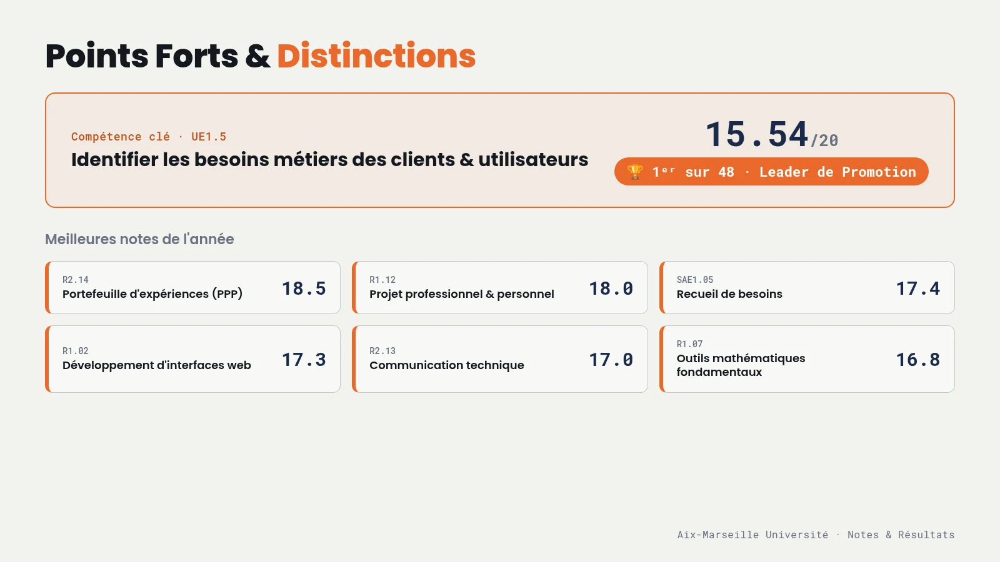
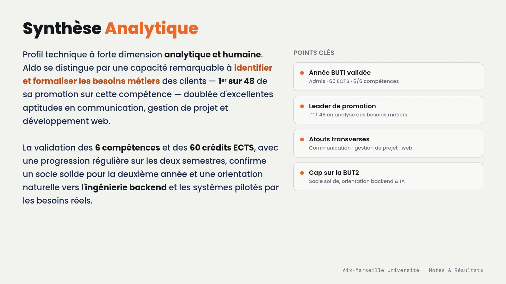
Bachelor in Software Engineering
2020 – 2024
Université du Lac Tanganyika, Bujumbura, Burundi
Graduated with a degree equivalent to Licence +3 (recognized in France). Focused on software development, backend systems, databases, and software architecture.
Baccalauréat Scientifique B
2017 – 2020
Lycée Clarté Notre Dame de Vugizo, Bujumbura, Burundi
Major: Maths, Biologie, Chimie & Sciences de la Terre. Graduated with Mention : Bien.
🏆 Prizes & Achievements
DevArt 2026 — Prix du Jury 🥇
1st Place · Feb 12–13, 2026IUT d'Arles, Aix-Marseille Université — 32h Hackathon
Team Nebula · 4 members: Mamadou Bailo BARRY, Aminata Sita CAMARA, Aldo Alex NGANJI, Djawad TOURE ISSAHOU — BUT Informatique, 1ère année
Theme: "L'Écho". We built an AI interface that creates a direct echo between digital usage and natural resource consumption. The more complex the user's request, the more the interface triggers visual and sound alerts simulating deforestation and water consumption from server cooling — turning abstract data into a concrete, militant emotional experience.
10 teams competed · 32h non-stop · Jury composed of local industry professionals
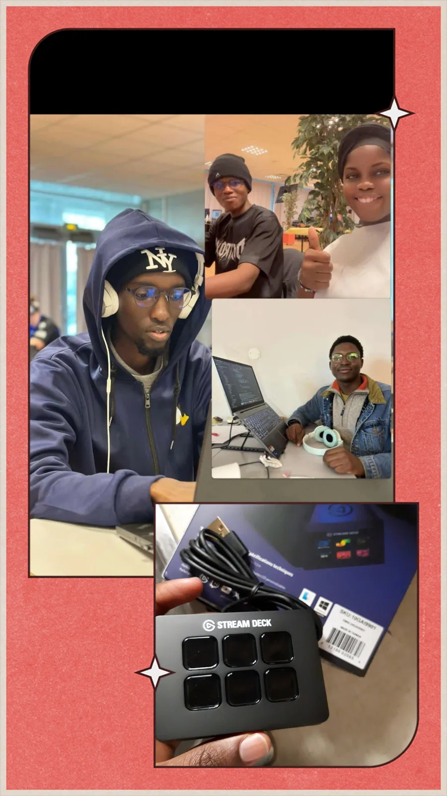
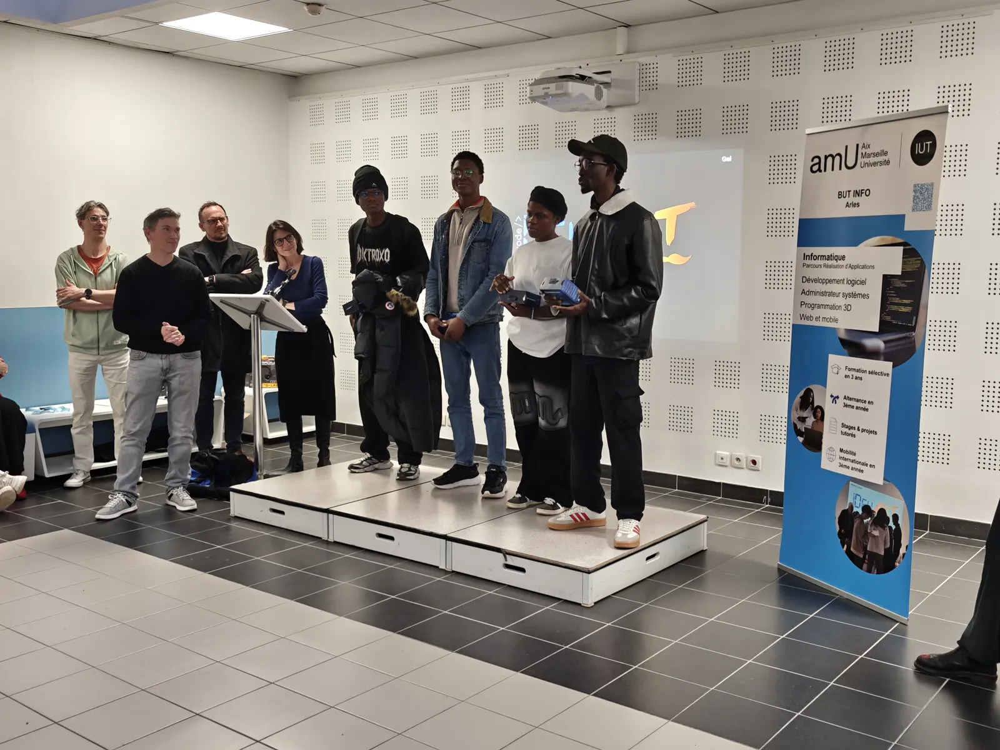
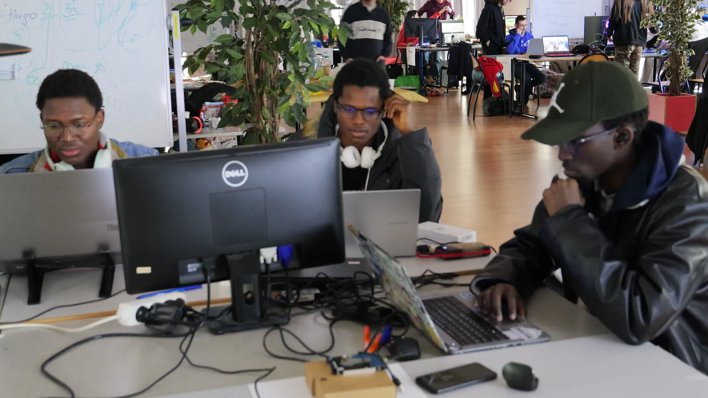
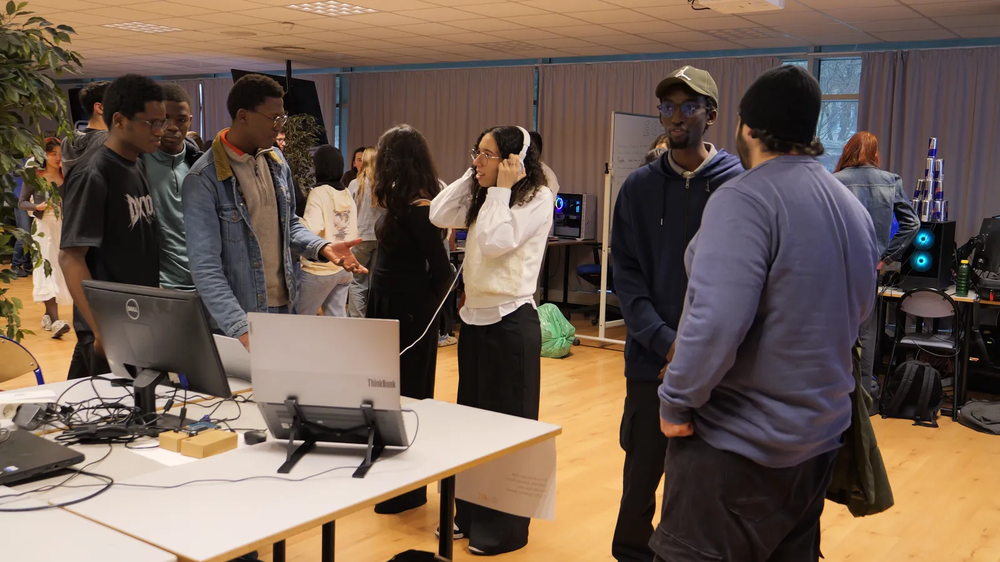
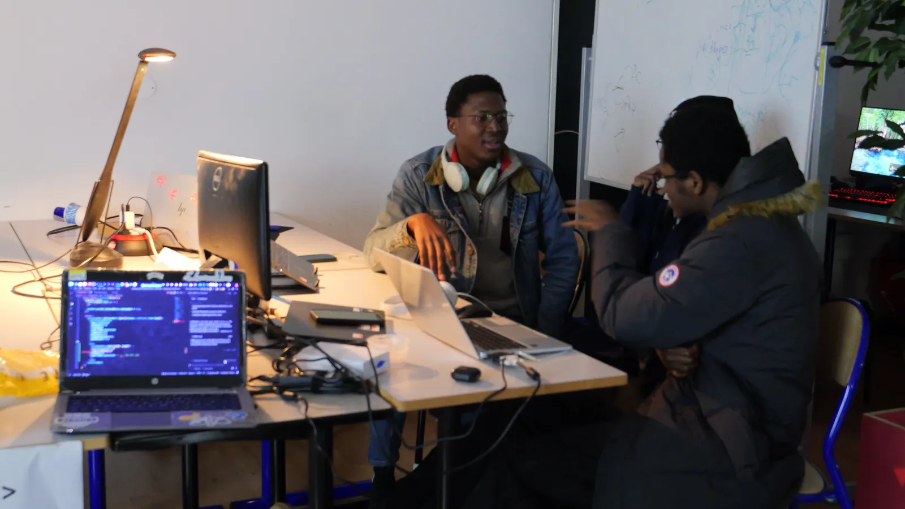
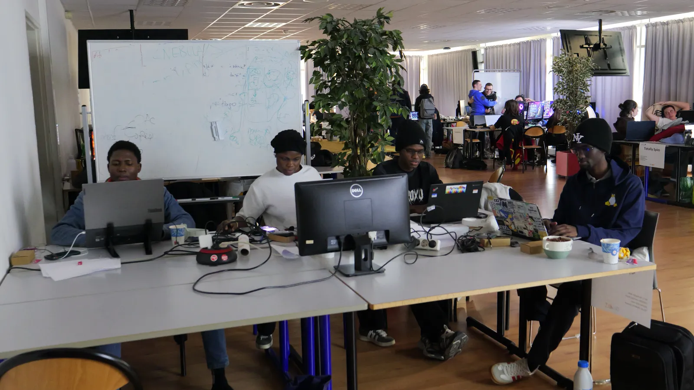
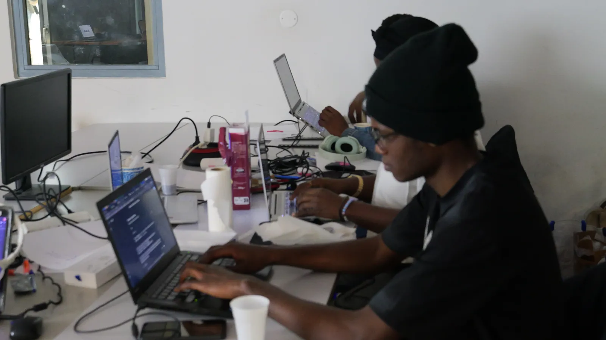
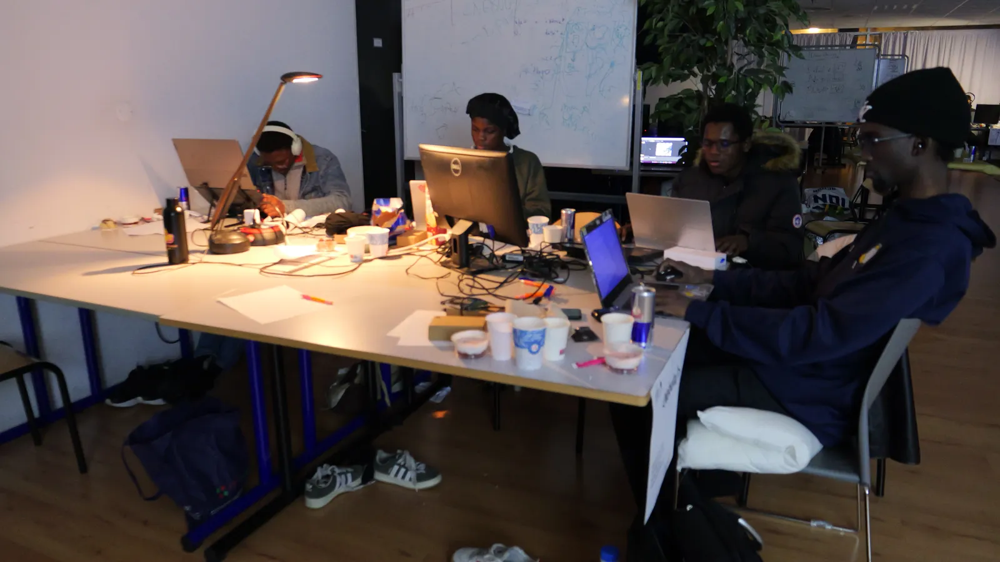
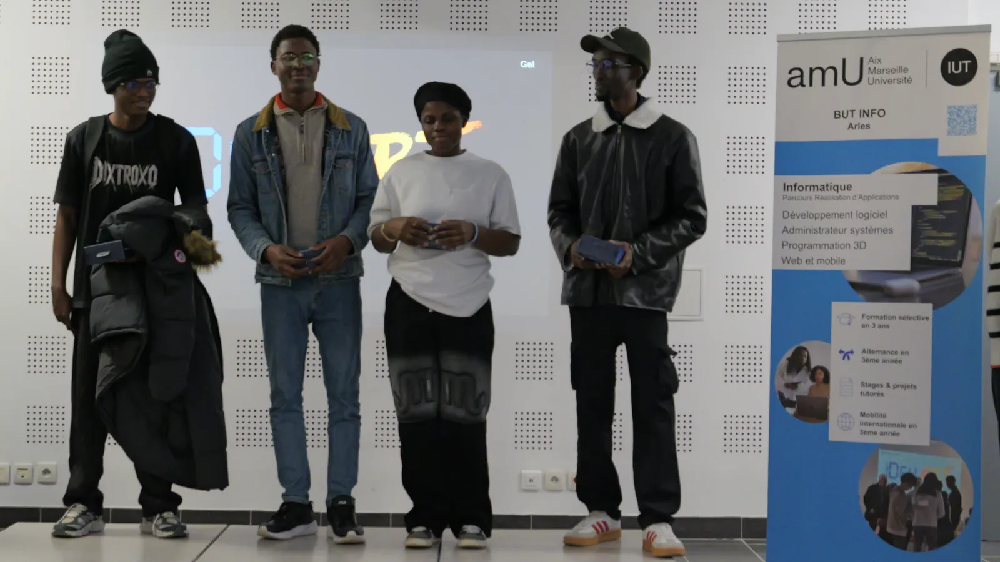
Training & Certifications
Formation en Informatique — Niveau 2
2023
Higher Life Foundation, Bujumbura, Burundi
Système de gestion de base de données — Microsoft Access. Obtained with Note : A+.
Formation en Informatique — Niveau 1
2022
Higher Life Foundation, Bujumbura, Burundi
Initiation en informatique — Microsoft Word, Excel, PowerPoint & Internet. Obtained with Note : A+.
Professional Experience
Back End Developer
May 2025 – Aug 2025
Asyst Resources LTD | Bujumbura, Burundi
- Hired full-time following the internship to continue contributing to backend systems.
- Designed and maintained REST APIs using NestJS and TypeScript for production-grade backend infrastructure.
- Worked on scalable microservices and SaaS architecture patterns.
- Collaborated on backend features used by real clients in production environments.
Back End Developer — Internship
Feb 2025 – Apr 2025
Asyst Resources LTD | Bujumbura, Burundi
- Gained hands-on experience with modern backend development using NestJS, Python, and TypeScript.
- Discovered and applied enterprise patterns including microservices and event-driven architecture.
- Contributed to real-world backend projects in a professional team environment.
Projects
Production systems, open-source infrastructure, and applied AI. Explore my engineering work below.
{kind=link}
{kind=link}
{kind=link}
{kind=link}
{kind=link}
Services
Engineering robust, scalable backend systems and APIs — complemented by full-stack web development and clean, creative interfaces.
Backend & API Engineering
Designing scalable backend systems and REST APIs with NestJS, Python, and Django — backed by PostgreSQL, microservices, and third-party integrations (Stripe, Twilio).
Full-Stack Web Dev
Building complete web applications with Node.js and Django, integrated with robust PostgreSQL databases.
UI/UX & Creative UI
Designing immersive digital experiences with vanilla CSS, interactive animations, and a focus on visual excellence.